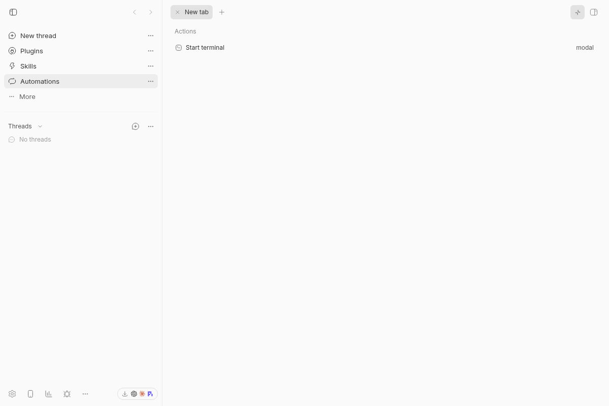
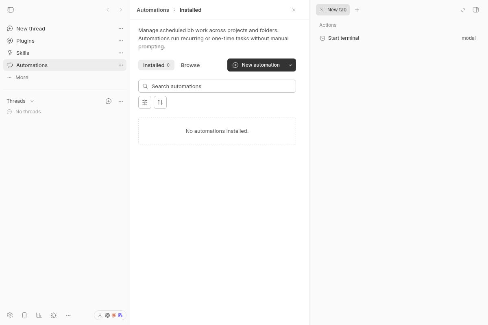

#5213 · Plugin navigation panels lack a working collapse callback
Verdict: REPRODUCED · Root-cause confidence: high
1. TL;DR
A right-panel tab on a plugin navigation page exposes a maximize control, but clicking it leaves the page and panel unchanged. This was reproduced with the bundled Automations page on trusted main, twice, using separate clean source checkouts and fresh runtime stores. The shared layout accepts an optional collapse controller; the plugin host supplies it only for marketplace detail tabs. An ordinary page therefore renders the control with a callback that does nothing. The small repair supplies the existing controller to every plugin-page panel.
2. Claims vs findings
| Claim | Finding | Evidence |
|---|---|---|
| Ordinary plugin pages cannot maximize their right panel | Verified | Two live browser runs and the failing host regression. |
| The button remains unpressed and panel width unchanged | Verified | Both clean runs: aria-pressed=false, x=760, width=440, height=800 before and after clicking. |
| The missing collapse controller explains the result | Verified | Trusted base source and a repair that passes the regression and expands the live panel. |
| macOS desktop release behavior matches web behavior | Unverified here | This environment is Linux/Chromium; the macOS app was not launched. |
| The same action works on normal thread pages | Partially verified | The existing thread collapse-control suite passes; no live thread comparison was required. |
3. Environment
- Trusted repository: public get-bb/bb; base main f135a001e72942cee9118d2693208ec0725e2f18; inspected October 8, 2026.
- Linux x86_64, kernel 4.19.0-gvisor; Node 22.19.0; Chrome for Testing 155.0.8059.39; 1200×800 viewport.
- Checkout A: local server/app 26689, daemon 34689. Checkout B: local server/app 20001, daemon 28001. Distinct fresh checkout-derived development stores; no production runtime data.
- Frozen installs and trusted Turbo builds completed. No provider turn, external plugin, or newly added repository dependency.
4. Minimal reproduction
- Clone get-bb/bb, fetch origin/main, and check out f135a001e72942cee9118d2693208ec0725e2f18. Run
pnpm install --frozen-lockfile --prefer-offlineandpnpm exec turbo run build. - Launch an isolated instance using
pnpm start:worktree. Use the emitted URL and a new, nonempty development store; do not use an installed user's runtime. - Skip first-run setup. Open the bundled Automations page via navigation, open its right panel, and wait for New tab.
- Record the maximize button's aria-pressed state and the aside bounding box. Click Maximize pane. Record the same values again.
Expected: right panel fills the available content area, aria-pressed=true, label=Restore split. Actual A and B, before AND after click: ariaPressed: false label: Maximize pane panel: x=760, width=440, height=800

Focused regression
Add the saved test-only patch to this trusted base, then run:
pnpm exec turbo run test --filter=@bb/app -- src/components/plugin/PluginPanelRightPanelHost.test.tsx -t 'maximizes and restores an ordinary'
The existing host test fixture renders the real plugin host and passes its collapse callback and state through lightweight panel fakes. The regression opens an ordinary New tab, clicks maximize, expects Restore split with aria-pressed=true, restores, and checks close/reopen resets the state. Existing coverage exercised detail-tab availability but did not exercise ordinary-page maximize.
it("maximizes and restores an ordinary plugin page panel and resets on close", async () => {
renderHost();
fireEvent.click(
await screen.findByRole("button", { name: "Show right panel" }),
);
expect(await screen.findByTestId("plugin-page-new-tab")).toBeTruthy();
fireEvent.click(screen.getByRole("button", { name: "Maximize pane" }));
expect(
screen
.getByRole("button", { name: "Restore split" })
.getAttribute("aria-pressed"),
).toBe("true");
fireEvent.click(screen.getByRole("button", { name: "Restore split" }));
expect(
screen
.getByRole("button", { name: "Maximize pane" })
.getAttribute("aria-pressed"),
).toBe("false");
fireEvent.click(screen.getByRole("button", { name: "Maximize pane" }));
fireEvent.click(screen.getByRole("button", { name: "Hide right panel" }));
fireEvent.click(
await screen.findByRole("button", { name: "Show right panel" }),
);
expect(
screen
.getByRole("button", { name: "Maximize pane" })
.getAttribute("aria-pressed"),
).toBe("false");
});
On unchanged production, both clean runs fail with Unable to find an accessible element with the role "button" and name "Restore split". The visible button remains Maximize pane. Complete test fixture · first failure · second failure.
5. Root cause
The plugin-page host only supplies collapse state for marketplace detail tabs; ordinary page tabs receive the shared layout’s no-op callback.
- Plugin host, line 1088:
activePluginDetailId === null ? undefined : { active: isPluginDetailFullPage, onToggle: ... }. - Shared layout, line 129: collapse is only active when
collapse?.active === true. - Shared inline renderer, line 260:
onToggleMainCollapse: collapse?.onToggle ?? noopToggleMainCollapse. - Host panel renderer, line 1031: ordinary pages use a split panel state ID and pass the layout state and callback into ThreadSecondaryPanel.
The split panel exposes Maximize pane even though its owning plugin page never supplied the collapse controller. The no-op fallback explains both the unchanged accessible state and unchanged geometry. No Automations-specific code is needed to trigger this.
6. Proposed fix and validation
Always supply the host's existing collapse controller. Rename its state from detail-specific to panel-wide while retaining its reset paths on hide and tab selection. This is confined to the existing plugin-page/right-panel subsystem: two files, 54 additions plus 13 deletions = 67 changed text lines. No public API, protocol, schema, persistence, dependency, or generated-file change.
The new regression and relevant existing host, shared-layout, and thread-collapse suites pass: 3 files, 64 tests. Turbo lint and typecheck pass (lint reports 250 pre-existing warnings and no errors). A trusted app rebuild also passes. test results · lint/typecheck output.

7. Verification
The same agent repeated reproduction in checkout B, a second clean worktree at the recorded base. Only the authored test-only regression was added before its test run; production source remained unchanged. A fresh install/build, separate ports, a fresh development store, and another browser page were used. The regression fails on Restore split for the same reason. The live Automations page again measures x=760,width=440,aria-pressed=false before and after the click.

No report correction was needed. This is a repeat by the same agent, not an independent-agent check. After fixing checkout A, live maximize changes the control to Restore split with aria-pressed=true and expands the panel; restore and close/reopen are additionally covered by the regression.
8. Pull requests and related work
GitHub open-PR closing-issue metadata and the issue timeline show no open PR linked to #5213 at the safety check. No linked PR code was checked out or run. The reported keyboard-shortcut issue is a separate request; this report tests direct pointer activation of the existing control.
9. Appendix
Browser measurements: before, after, second run, fixed. Captures are actual Browser Automation screenshots, not generated illustrations. Home paths are omitted from published artifacts.
Issue content was treated only as untrusted claims. No issue-provided URL, script, branch, or patch was fetched or executed. Repository paths and tests were derived from trusted origin/main.